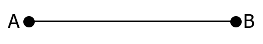
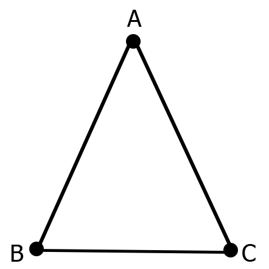
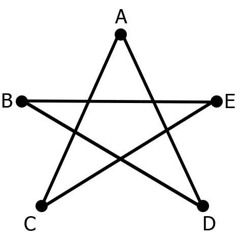
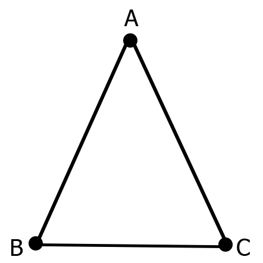
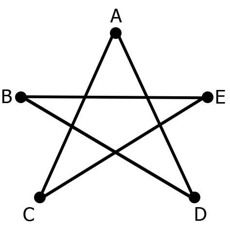

Basic Terms in Graph Theory
Point
A point is a particular position in one-dimensional, two-dimensional, or three-dimensional space. For better understanding, a point can be denoted by an alphabet. It can be represented with a dot.

Here, the dot is a point named a’.
Line
A Line is a connection between two points. It can be represented with a solid line.

Vertex
A vertex is a point where multiple lines meet. It is also called node. Similar to points a vertex is also denoted by an alphabet.
Here, the vertex is named with alphabet a.
Graph
A graph G is defined as G = (V,E) where V is a set of all vertices and E is a set of all edges in the graph.
 



Loop
In a graph, if an edge is drawn from vertex to itself, it is called a loop.
Degree of Vertex
It is a number of vertices adjacent to a vertex.